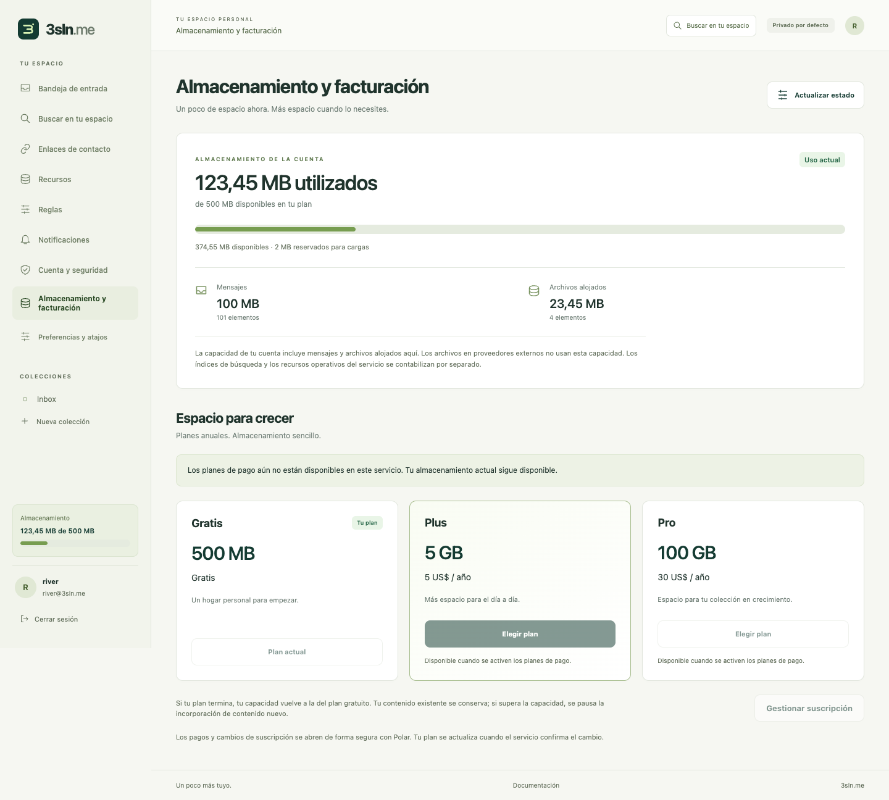
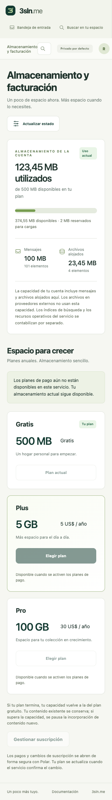

Local app walkthrough
Captured from the actual local Wrangler app and real Chrome, 2026-10-11–12. These are test accounts; no live recovery credentials, contact capabilities or private answers appear in the images. Production release remains disabled. External-provider setup, notification delivery, full federation and account-retention/deletion still require the work recorded in DEVLOG.
The new encrypted recovery flow passed real passkey and password signup, restoration, file rotation and replay rejection, with independent adversarial checks. Personal information remains vulnerable to offline guessing; the UI recommends an extra private passphrase.
1. Start with an identity
Public documentation, self-hosting links and language selection remain accessible without an account. Local signup offers passkeys or a password, terms acknowledgement, then mandatory recovery setup.

2. Choose how to unlock the recovery file
Select one to twelve questions, choose a type and add optional public hints. Every answer contributes to encryption. A private passphrase is recommended because personal information can be guessed offline. Demo question names intentionally resemble navigation labels to check that user content remains unchanged.

3. Download only the encrypted file
The random server recovery credential is inside the encrypted payload. Questions, types and hints are readable; answers and credentials are absent from the downloaded public fields.

4. Test every answer before activation
A successful local round-trip is required before account confirmation. It tests the in-memory encrypted envelope; the user must still keep the downloaded copy safe.

5. Confirm the file is saved
Account activation follows a tested unlock and explicit saved-file acknowledgement. Wrong answers do not reset the account or reveal which answer was wrong.

6. Recovery on a narrow phone screen
The question editor fits 320-pixel and 390-pixel viewports. Reordering questions preserves native answer controls; no answer is projected into application state.

7. Localized controls, unchanged personal content
Spanish restoration uses the same encrypted format and normalization. Public prompts and hints from the file remain user content and are never translated.

8. A private inbox
Signed invitations deliver bounded messages into allowed collections. Owner read status, collection moves, rules and quarantine are separate from untrusted sender annotations.

9. Control each invitation
Each contact endpoint has its own scope, expiry and limits. Quarantine or revoke it independently. Opening the signed URL does not deliver a message or consume its message quota.

10. Manage access to the account
Enroll multiple passkeys, review signed-in devices and revoke sessions. Email linking and optional email sign-in remain disabled until the outbound service is configured.

11. Choose resources with clear availability
S3-compatible and WebDAV setup are available behind reviewed endpoint rules. OAuth providers are visibly unavailable until their applications, flows and conformance are configured; this screenshot does not establish working external-provider delivery.

12. Choose notification channels
Preferences include channels, delays, repeat limits and collections. Hosted push/reminder delivery is still a release gate; storing preferences is not evidence of real delivery.

What these checks establish
The isolated browser suite exercises maintained Argon2id in a dedicated worker, Node/browser interoperability and the archived seven-type vector, malicious public metadata, wrong answers, wrong-provider files, duplicate submits, cancellation, real virtual-authenticator WebAuthn and full recovery rotation. Mobile layout and Spanish/user-content checks run separately. Production CAPTCHA, physical devices, low-memory performance, inbox delivery and all external storage providers remain separate verification.
13. See storage usage and annual plans
The visible account meter shows 500 MB on the free plan, reserved uploads and a messages/files breakdown. Plus is 5 GB for $5/year; Pro is 100 GB for $30/year. Checkout remains disabled until Polar setup and verification. These additional screenshots use the actual Chrome-rendered portal with explicitly mocked account/API data to exercise UI states; they do not prove live billing or deployed storage capacity.


14. Search messages across the account
Lexical and tag search support bounded cursor pages, index-lag notices and opening messages outside the initial inbox page. Semantic search remains unavailable until its provider is configured and verified. User-authored titles and snippets retain their language and render as inert text.

File beaming and nearby pairing
Paid senders can select several files, choose a registered device or saved contact, and review the names and declared size. Nearby QR pairing does not require a saved contact. The recipient chooses which files to receive; remote offers appear on eligible devices and only one device can accept.


These screenshots use explicitly mocked paid-account/API fixtures. Browser tests exercised native WebRTC between two local portals and verified selected-file bytes; they do not establish internet NAT traversal, TURN relay, push delivery or real paid entitlements. Streaming uses a user-approved file destination where supported, with a bounded 32 MiB memory fallback elsewhere. TURN remains disabled pending credentials and an enforceable relay-spend budget.
Agent consent and connected apps
The HTTP MCP consent page identifies the requesting app, callback origin and signed-in account. Every collection/action checkbox starts unchecked. Deletion has a separate warning; the user can deny the request. Connections can be revoked in the portal.


These screenshots use mocked authorization-request metadata. Separate actual Worker tests verify PKCE, audience, scoped tools, refresh rotation and revocation. An upstream app/MCP resource importer remains a design, not a deployed feature.
Conversations and reply-all
Every conversation message targets the full active membership. The recipient list and per-recipient delivery outcomes stay visible; a partial delivery never appears as complete. Shared-secret authors are labeled unverified. Joining, invitations, individual permissions and removal each have explicit controls.


These screenshots use mocked conversation records/delivery outcomes. Durable Node and real local HTTP tests separately verify posting, admission, reply-all, epoch rotation, restart and sanitized inbox/search content. General cross-host federation and production conformance remain gated.
Visible monthly activity and semantic consent
Storage and monthly covered-change usage each show remaining capacity. Exhaustion preserves account reading, export, deletion and security controls. Semantic search requires explicit consent for limited English excerpts to be processed by Workers AI.


These images use bounded API fixtures. Real Workers AI inference and insertion/query/deletion checks ran separately against all four hosted Vectorize shards.
Connected app resources and disconnection
Connected apps now tracks the app connection independently of its individual agent logins. Review the app's identity, presentation source, resource URL and granted collections/actions. Revoking one agent login leaves the connection intact; disconnecting the app stops new calls and invalidates the connection's tokens and grants. Owner data stays in its resources. Reconnecting requires fresh consent and cannot revive old credentials.


These screenshots use explicitly mocked app/manifest/grant records. Separate real Worker tests verify listing, CSRF-protected disconnection, token and refresh denial, and storage preservation. Independent durable tests cover reconnect generations, pending consent, corrupt records and final dispatch checks. A failed grant listing leaves healthy app disconnect controls available.
Names/descriptions may come from Bindle app metadata or linked/discovered web app manifests. The UI keeps the registered identity and source visible, uses initials, and never loads external icons automatically. Optional Node discovery has a verified DNS-pinned adapter and passed a read-only public MDN example check. Cloudflare external discovery and a raster icon cache remain unconfigured release work.
22. Browser tools and assistant connections
Automation hub separates OAuth assistant connections from explicitly enabled tools in the current browser session. Collection/action choices start unchecked. Browser tools have no verified assistant identity; writes and deletions require review. Disabling tools removes native registration and backend access. Unsupported browsers retain assistant connection management.
The desktop and review images below come from real Chrome WebMCP using experimental flags against the actual local Wrangler app: exact collection listing, confirmed file creation, byte readback and revocation passed without mocked browser or owner APIs. This does not establish production browser availability or integrations with third-party app tools. The 320-pixel mobile image uses clearly labeled simulated browser/HTTP fixtures for layout and interaction checks.


The shared callable design also allows apps to request human command presentation independently of a palette or automation transport. General external app commands, cooperative frame import and closed-browser execution remain proposed rather than implemented.
23. Canonical 3sln branding
The app now uses the canonical assets from the organization repository: outlined wordmark, gradient mark, 512px PWA/avatar image and inline email logo. The logo keeps its proportions on mobile. The landing screenshots are actual local Wrangler pages; the email image is a browser preview using a mocked send binding, not a delivered email or an inbox-provider avatar. Self-hosted branding remains generic.


24. Managed Google Drive setup and reconnect
Google authorization creates a dedicated folder for this connection's files; arbitrary existing files are not imported or enumerated. Apps keep their own directory files. The review states the 1 MiB upload limit, managed-file/version bounds and physical retention in Drive. Reconnect requires the same Google account and preserves the original resource, folder and key map. Disconnect removes local credentials without revoking the whole Google OAuth project.
These desktop/mobile images use explicit Google/OAuth fixtures. Actual Worker tests verify authentication, encrypted state, PKCE, callback cleanup and consent-denial handling; durable Node tests verify gateway write/read/range/replay and reconnect against simulated Google endpoints. Live Google-account verification still awaits credentials.